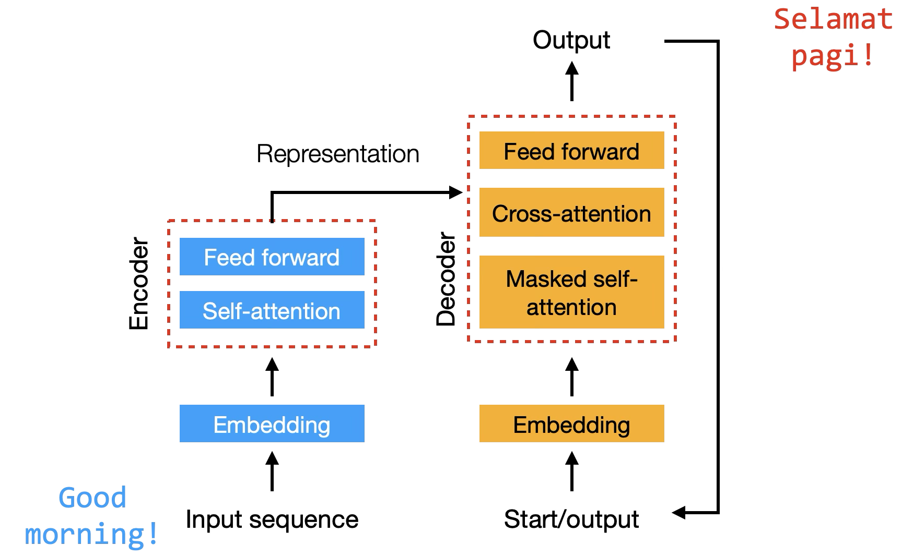

Slot 84 · the architecture diagram, joined to its attention matrix · mock
Your ask: each page carries its architecture, drawn as your figures draw it, and the attention box it is about is joined to
the matrix, with the matrix's rows and columns labelled by where they come from. Rows are queries, columns are keys: in
cross-attention the rows come from the decoder and the columns from the encoder. The encoder is blue and the decoder amber, as in
your figures (--c-group-a / --c-group-b), and every token label takes the hue of the stack it came from. 550 wide, the
narrowest canvas; numbers live from the draft's models. Filled states; strings are candidates.
1 · Encoder and Decoder: the diagram at the left, a leader from its attention box to the matrix
2 · Encoder–decoder: the diagram on top, a leader down from each attention box to its matrix
Two stacks side by side as in your figure, the encoder's output (Representation) running into the decoder's cross-attention. Three leaders: the encoder's self-attention to its matrix, the masked self-attention to the decoder's, the cross-attention to the cross matrix, whose columns are joined to the encoder's output and whose rows to the decoder. At the side, the diagram leaves no width for three matrices without one leader crossing the decoder's stack, so page 3 cannot match pages 1–2's layout.

3 · To answer with the mock open
1 · The connection. A leader line from the attention box to its matrix, and the source named along the matrix's edges (drawn) · or the box and the matrix sharing a coloured outline, no line.
2 · Pages 1 and 2: diagram at the left (drawn) · or on top, as page 3 (the three pages alike, but pages 1 and 2 grow about 220 px taller, and page 2 still carries generation).
3 · The boxes filled in the stack's hue, as your figures (drawn) · or outlined in it on the plain surface, the attention box the only filled one.